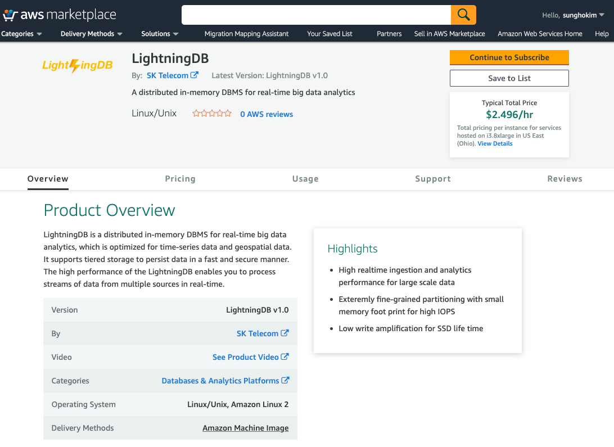

Note
This page guides how to start LightningDB automatically only for the case of AWS EC2 Instance.
1. Create EC2 Instance¶
Amazon Machine Image(AMI) for LightningDB can be found in 'AWS Marketplace' and user can create EC2 Instance with the AMI.

To use LightningDB in a new Instance, the size of the root volume should be 15GiB at least.
To use Web UI of HDFS, YARN, Spark and Zeppelin, you should add the following ports to 'Edit inbound rules' of 'Security groups' in EC2 Instance.
| Service | Port |
|---|---|
| HDFS | 50070 |
| YARN | 8088 |
| Spark | 4040 |
| Zeppelin | 8080 |
2. Access EC2 Instance¶
Create a EC2 Instance for LightningDB and access with 'Public IP' or 'Public DNS'.
'*.pem' file is also required to access EC2 Instance.
$ ssh -i /path/to/.pem ec2-user@${IP_ADDRESS}
3. Setup environment¶
When you access EC2 Instance, the following jobs are already done.
- Create and exchange SSH KEY for user authentication
- Mount disks
Warning
Before starting LightningDB, please check if the disk mount is completed using 'lsblk' like below.
[ec2-user@ip-172-31-34-115 ~]$ lsblk
NAME MAJ:MIN RM SIZE RO TYPE MOUNTPOINT
xvda 202:0 0 10G 0 disk
└─xvda1 202:1 0 10G 0 part /
nvme0n1 259:0 0 1.7T 0 disk /nvme/data_01
nvme1n1 259:1 0 1.7T 0 disk /nvme/data_02
nvme3n1 259:2 0 1.7T 0 disk /nvme/data_03
nvme2n1 259:3 0 1.7T 0 disk /nvme/data_04
- Set Hadoop configurations(core-site.xml, hdfs-site.xml, yarn-site.xml).
- This settings is default value for starter of Hadoop.
- To optimize resource or performance, user needs to modify some features with Hadoop Get Started
- Set Spark configuration(spark-default.conf.template)
- To optimize resource and performance, user also need to modify some features with Spark Configuration
Tip
To launch Spark application on YARN, start YARN with running 'start-dfs.sh' and 'start-yarn.sh' in order.
4. Start LightningDB¶
LightningDB provides LTCLI that is introduced in Installation. With LTCLI, you can deploy and use LightningDB.
LightningDB supports Zeppelin to provide the convenience of ingestion and querying data of LightningDB. About Zeppelin, Try out with Zeppelin page provides some guides.